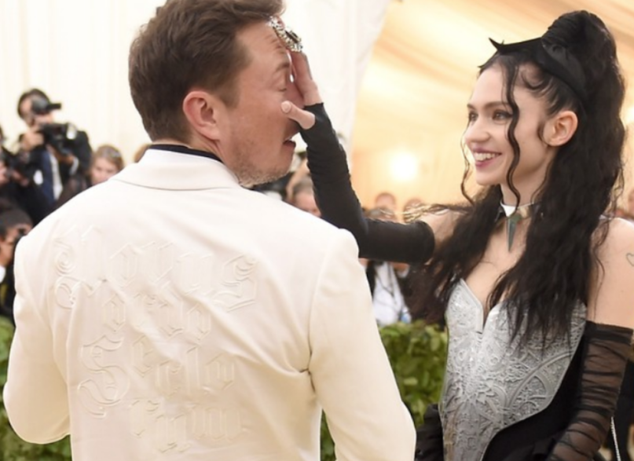

Miscellaneous Rant

LET GRIMES DATE ELON MUSK IN PEACE
I like Grimes’ music. I remember her album, Visions, being one of the soundtracks of my life as a college student. Art Angels only showed her growing more comfortable with herself and her art. Now, I can’t say that I have been very interested in Grimes’ personal life, because I knew nothing of her love interests and I knew nothing of her dating Elon Musk, billionaire and founder of the innovative space travel, soon-to-be empire that is SpaceX and co-founder of Tesla. My sister told me about it and the backlash she had been receiving. Apparently she defended his funding of some political groups among other things.
I’m going to be honest here, I think people should leave her alone. The older I get, the more I realize how unrealistic it is to expect to find this perfect person who will agree with all of your viewpoints and nuanced perspectives on some ambiguous issues. I understand, no one wants a bigot as a partner. I definitely don’t want that. But am I really going to turn away someone I am otherwise compatible with because they like to eat pork, and I don’t? Or because they may consider communism to be a viable economic system?
Anyway, these two are compatible. They met online, as most introverts prefer to, and bonded over a pun about Roko’s Basilisk, but instead, incorporated Rococo, a flamboyant, elaborate, decadent French art movement that was reared at the end of the Baroque period in the 1700s. Grimes made a video to showcase the pun. As Elon Musk took to the internet to do research for his joke incorporating A.I.’s revenge with an ornate, French art movement, he found Grimes’ video and decided to shoot his shot, if you will. Several months later, they look like a father and daughter about town on vacation, but seem to be happy together.
After reportedly being mistreated by boyfriends in the past, she finds someone, who albeit, has questionable political leanings, but otherwise respects her, as far as we know. So why the fuck are y’all mad because she’s not singing the praises of Karl Marx anymore and dating the modern bastion of capitalism? Her fanbase is legit upset and are taking to tumblr to vent via lowercased, stream-of-consciousness ramblings peppered with “anarcho-feminism” this “patriarchal crypto-capitalist power structure” that. They probably held virtual “burnings” of her albums, by sending it to the recycling bin on their MacBooks, and emptying it out later to show that they’re serious about deleting it (I can’t confirm they actually did this, but it sounds plausible).
I just don’t care who she dates, but after reading a couple blogs, I think they seem good together. I hope I can find someone who bonds with me over historical allusions and symbology found in popular culture and cinema. We can only hope to be so lucky.
Next «